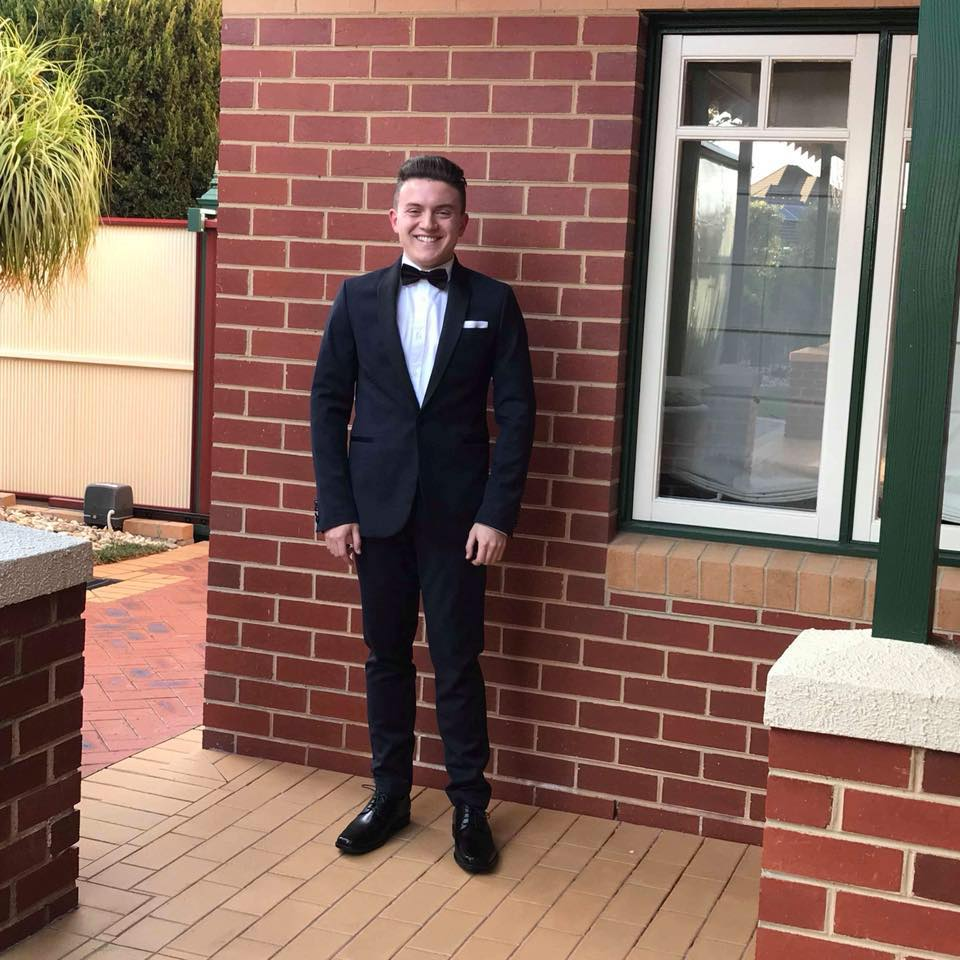

Personal Information

Born and raised in Melbourne, Australia
Have an Italian background, where grandparents from both parents sides immigrated from Italy to Melbourne
I completed primary and secondary school, completing VCE in 2018. I did study for an undergraduate degree in Speech Pathology at ACU. I withdrew at the end of 2020 to pursue something that I am more interested and passionate about, which is Information Technology.
Speak fluent English
Passionate follower of sport, especially AFL and EPL.
Barrack for Collingwood and Everton, respectively. Other interests include going to the gym, going out and socialising, alongside playing video games, especially FIFA